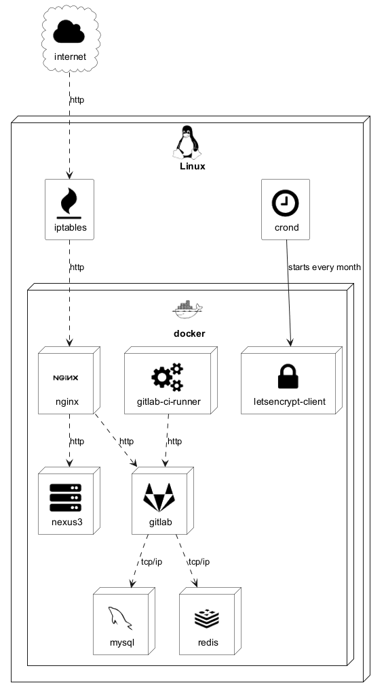

@startuml
skinparam defaultTextAlignment center
!include <tupadr3/common>
!include <tupadr3/font-awesome-5/server>
!include <tupadr3/font-awesome-5/gitlab>
!include <tupadr3/font-awesome/gears>
!include <tupadr3/font-awesome/fire>
!include <tupadr3/font-awesome/clock_o>
!include <tupadr3/font-awesome/lock>
!include <tupadr3/font-awesome/cloud>
!include <tupadr3/devicons/nginx>
!include <tupadr3/devicons/mysql>
!include <tupadr3/devicons/redis>
!include <tupadr3/devicons/docker>
!include <tupadr3/devicons/linux>
FA_CLOUD(internet,internet,cloud) #White {
}
DEV_LINUX(debian,Linux,node){
FA_CLOCK_O(crond,crond) #White
FA_FIRE(iptables,iptables) #White
DEV_DOCKER(docker,docker,node) {
DEV_NGINX(nginx,nginx,node) #White
DEV_MYSQL(mysql,mysql,node) #White
DEV_REDIS(redis,redis,node) #White
FA5_SERVER(nexus,nexus3,node) #White
FA5_GITLAB(gitlab,gitlab,node) #White
FA_GEARS(gitlabci,gitlab-ci-runner,node) #White
FA_LOCK(letsencrypt,letsencrypt-client,node) #White
}
}
internet ..> iptables : http
iptables ..> nginx : http
nginx ..> nexus : http
nginx ..> gitlab : http
gitlabci ..> gitlab : http
gitlab ..> mysql : tcp/ip
gitlab ..> redis : tcp/ip
crond --> letsencrypt : starts every month
@enduml